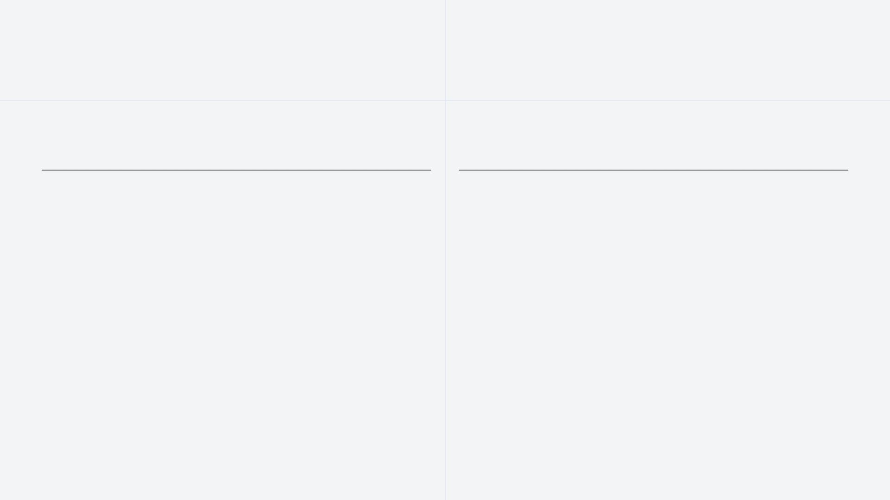
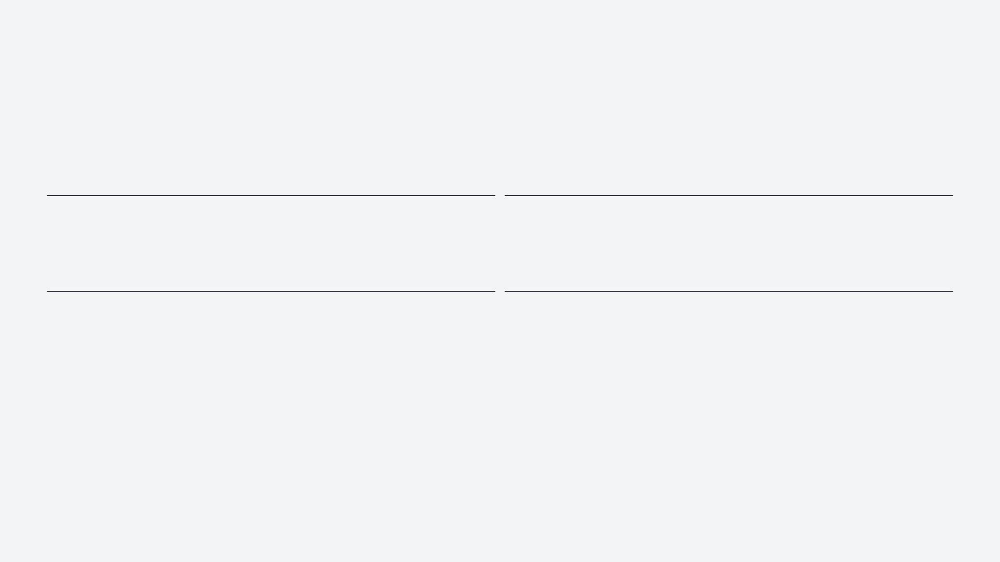
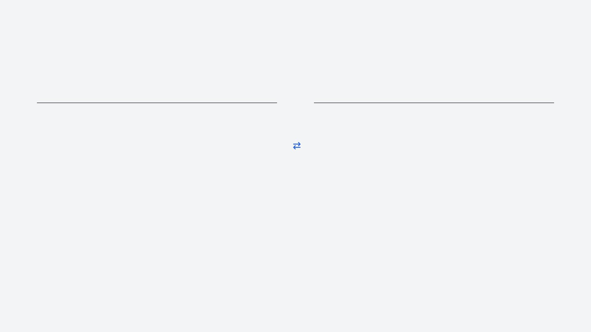
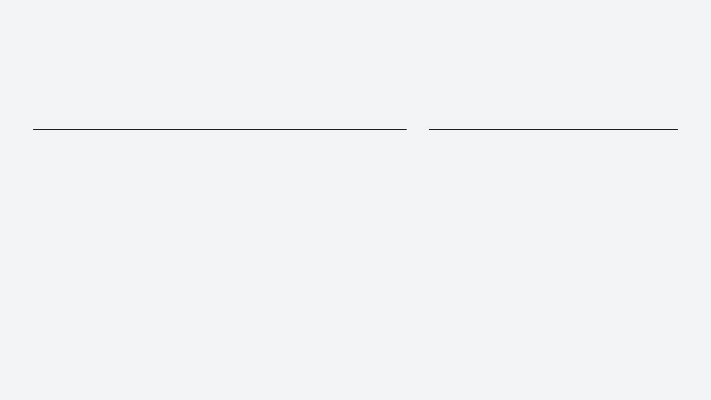

连接中国技术 · 服务非洲建设

AXLTeco Limited（深圳市安信联科技有限公司）是深圳安信联旗下专注于海外建筑智能化与弱电系统工程的专业公司。2024年正式在尼日利亚设立机构，依托中国成熟的工程管理经验与先进技术体系，致力于为非洲市场提供高品质、可靠的智能化解决方案。
我们的主要服务领域包括：政府机构、工业园区、商业综合体、基础设施、医疗建筑和教育建筑。

AXLTeco 提供从咨询、设计、供货到施工、调试、运维的一站式闭环服务，覆盖11项弱电系统：

AXLTeco 采用「中国技术 + 本地服务」的双引擎驱动模式：
作为中国土木工程集团有限公司（CCECC）的重要合作伙伴，AXLTeco 深度参与了尼日利亚多项国家级重点工程的建设：

策划实施的「拉各斯联邦税务局智慧工地管理系统」荣获中国住房和城乡建设部科学技术奖一等奖，充分体现了公司在建筑智能化及大型工程项目中的专业实力。
系统通过数字化手段实时监控工程进度与资源分配，实现精细化管控；集成AI识别与传感器技术，主动识别现场风险，确保施工安全；全过程数据留痕，确保每一项工程环节均符合高标准技术规范。
我们的使命：连接中国技术 · 服务非洲建设。以专业的工程能力推动建筑智能化发展，为非洲基础设施建设贡献中国智慧、中国标准和本地化服务力量。
我们的愿景：成为非洲值得信赖的建筑智能化与弱电系统集成合作伙伴。立足尼日利亚，服务西非，面向全非，与客户携手共创智慧未来。
战略布局：以尼日利亚为中心，逐步拓展西非及非洲其他国家市场。不断提升设计、施工与集成能力，打造具有国际竞争力的智能化品牌。
我们不仅建设系统，更建设信任
不仅交付工程，更创造长期价值
以工程品质为根基 · 以技术创新为驱动 · 以客户价值为导向